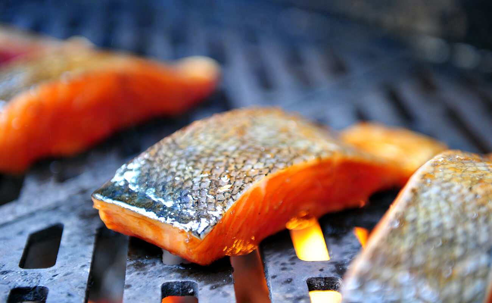

Home
Forest Grilled Salmon Recipe

This salmon dish is easy to prepare and serve, and tastes great with many sides!
Ingredients
- Salmon Filets
- Olive Oil - to brush on
- 1 red apple, diced - firmer varieties better
- 2/3rds cup Almonds, chopped
- 1/2 cup dried cranberries, chopped
- 2-3 tablespoons honey
- 1/2 teaspoon ground cinnamon
- Herbs, salt and pepper - as desired
Steps
- Heat grill to medium, lined with aluminium foil
- Add chopped apple, almonds, and cranberries to small mixing bowl
- Mix in honey and cinnamon, ensuring even mix and coating
- Set aside this mixture, this will go atop the cooked salmon
- Place salmon filets on grill, skin side down on the foil
- While cooking, brush with oil and top with herbs or salt and pepper to your taste
- Cook until meat is opaque and flakes easily with fork - about 12-15 min usually
- Remove salmon from grill, remove skin and foil
- Top salmon with fruit/nut mixture and serve